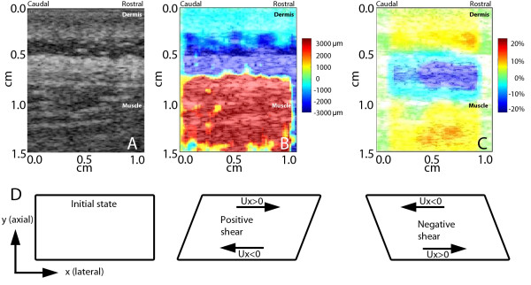
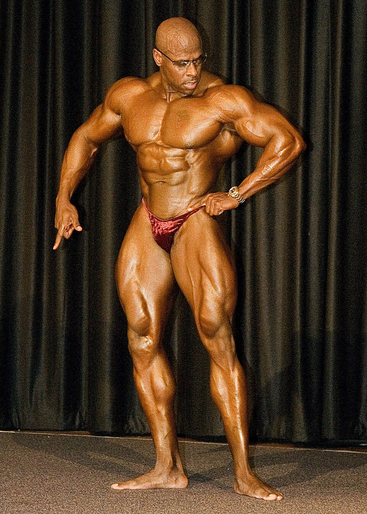
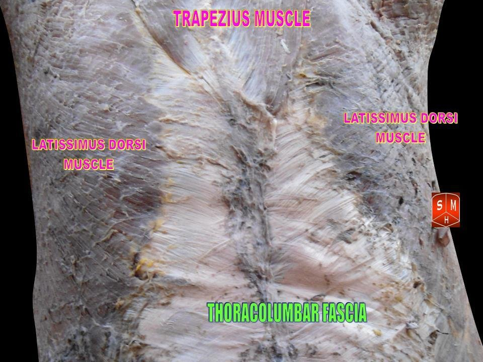
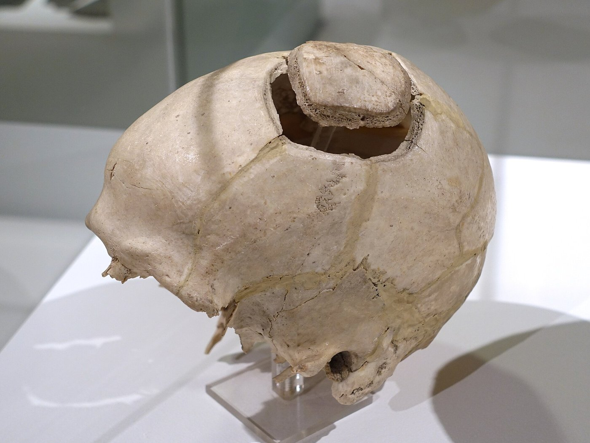
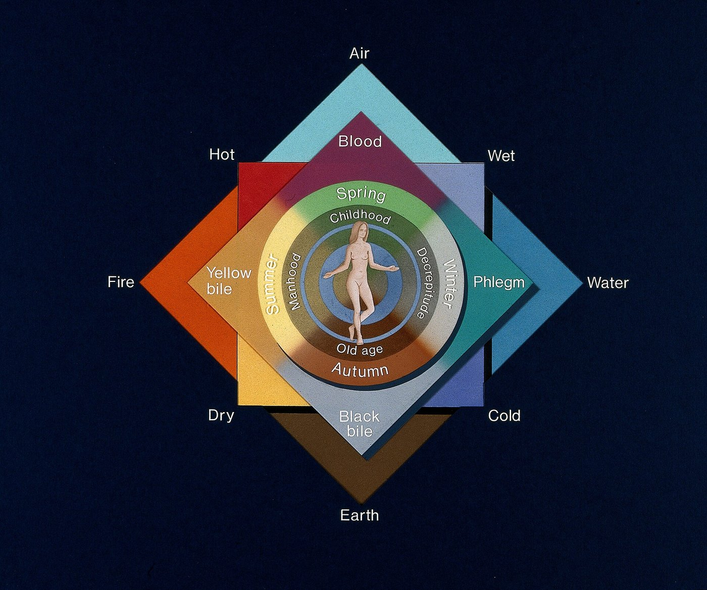
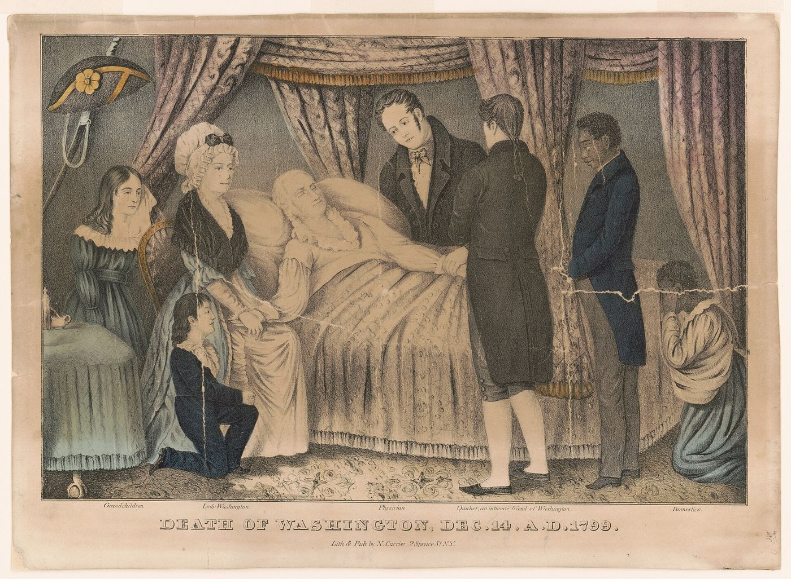
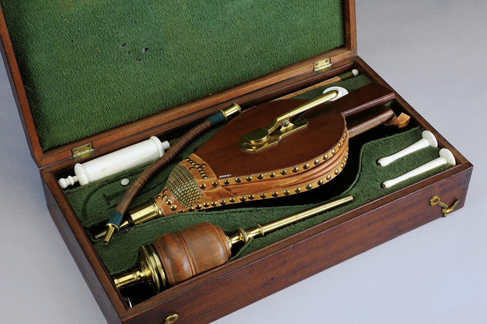

There is a perfect human body. Start from it, and measure everything else against it
Every person carries the design for a perfect body: an optimized tensegrity, where every bone floats in a web of evenly tensioned fascia. Almost nobody has ever lived in one. Today, health is defined by what goes wrong. In the Holistic Model of Reality (HMR), it is defined by what fully right looks like, and every condition becomes a measurable distance from it.
This page describes that perfect body and why it is the right starting point. How it is used to diagnose and classify disease is the HMR physical health model.
Not a nebulous ideal
The ideal comes from physics, not from imagination
We are not inventing a vague picture of perfection. Researchers in anatomy, cell biology, and fascia science have argued for decades that the human body is built as a tensegrity: rigid bones that do not stack like bricks, but float in a continuous, pre-tensioned web of fascia and connective tissue (Levin, 1980; Swanson, 2013; Turvey and Fonseca, 2014; Scarr, 2020; Ingber, 2023). Their words are below, quoted exactly.
Viewing the human body as a tensegrity is a new and fresh perspective, and it is more true to the body's mechanics than any other. If the body is a tensegrity, a remarkable thing follows. Tensegrities obey physics we understand very well. So we can take measurements of real, imperfect human bodies and ask a precise question: what is mechanically a better shape than this? Asked again and again, that question defines the optimized tensegrity: the shape where tension is shared evenly, every layer glides, and nothing strains.
Humanity has also measured tissue so thoroughly that, for a given sample, we know what healthy tissue is and what unhealthy tissue is. So we can picture a body where every tissue is healthy at once. No human being has ever lived in that body. But we can work out its conditions from the measurements we already have, and that is exactly what we are doing. One thing the physics predicts: such a body would be a super-athlete, beyond anything any living human has done. That is the gold standard of what human biology can be when it is perfected.
In an optimized mechanical system, shear and friction between sliding layers are zero or close to zero. The body already reaches that in places: healthy joint cartilage slides with a coefficient of friction as low as 0.001, lower than ice on ice (An et al., 2022), and the layers of deep fascia are lubricated by hyaluronan so they glide freely (Stecco et al., 2011). Fascia research also shows what happens when that gliding is lost (Langevin et al., 2011; below). Physics can be applied to the human body directly. It is time that a complete physics-based model of healthcare is developed.
A self-stabilizing tensegrity: six struts, no strut touching another, held only by tensed cables. Press it flat and it springs back. Figure 1 from Ingber, Biochemical Journal, 2023, CC BY 4.0.The same principle inside every cell: actin filaments (green) of the cytoskeleton, which Ingber's work models as a tensegrity. Photo: Erin Rod, CC BY 4.0, Wikimedia Commons.
“the skeleton, rather than being a frame of support to which the muscles and ligaments and tendons attach, has to be considered as compression components suspended within a continuous tension network.”
“Research conducted during the past 25 years has demonstrated that the architectural principles of tensegrity can be applied to biological organisms (termed biotensegrity) and that these principles can demonstrate the mechanical structure-function relationship at all size scales in the human body.”
“I delved further into the use of hierarchical tensegrities in living systems and explained how this architectural principle stabilizes form at all size scales, from individual molecules, subcellular structures, organelles, and cells to tissues, organs, and whole organisms”
“The fascial system builds a three-dimensional continuum of soft, collagen-containing, loose and dense fibrous connective tissue that permeates the body and enables all body systems to operate in an integrated manner.”
“the shear modulus increased linearly with increasing prestress as predicted.”
Wang, Ingber, and colleagues, measuring living cells: PNAS, 2001. Graham Scarr makes the case for biotensegrity over lever mechanics in J Bodyw Mov Ther, 2020.
These researchers describe the body or its cells as tensegrities. The step from their work to an optimized human tensegrity is ours.

Measuring how fascial layers slide: ultrasound of the thoracolumbar fascia (A), cumulative displacement (B) and shear strain (C) as the trunk bends. Figure 5 from Langevin et al., BMC Musculoskeletal Disorders, 2011, CC BY 2.0.
Layers built to glide, and what happens when they stop
Fascia is layered, and the layers are lubricated. Carla Stecco's group found hyaluronan between the sheets of deep fascia: “The HA within the deep fascia facilitates the free sliding of two adjacent fibrous fascial layers, thus promoting the normal function associated with the deep fascia.” (Stecco et al., Surgical and Radiologic Anatomy, 2011). A second line from the research: “Immobility can increase the concentration of HA, increase the viscosity, and reduce lubrication and gliding of the layers of connective tissue and muscle.” (Cowman et al., F1000Research, 2015)
Helene Langevin's team measured that gliding with ultrasound in 121 people: “Thoracolumbar fascia shear strain was ~20% lower in human subjects with chronic low back pain.” (56.4% versus 70.2%; Langevin et al., 2011)
Low-friction sliding is the design. Lost sliding is measurable. That is exactly the kind of quantity an optimized tensegrity can be defined by.
HMR's fascia protocol
Fascia that is attended to becomes receptive to change
HMR's protocol works on fascia directly, from the outside in and the inside out. In HMR's experience, once fascia has been attended to this way it becomes highly receptive to manipulation from outside the body and from within, and the changes it makes hold: they become lasting, rather than the temporary changes most exercise and stretching produce.
Ordinary stretchingMeasured stiffness changes “return to baseline levels within 10 to 20 minutes” (Ryan et al., 2008).
Receptive fascia (HMR hypothesis)Changes made after the fascia has been attended to directly are expected to hold, and to build on each other day after day.
What a tensegrity is
Tensegrities, from the simplest to the most complex
A tensegrity is a structure made of two kinds of part. Isolated struts take the compression, the pushing. They never touch one another. A continuous net of cables takes the tension, the pulling, and holds every strut in place. The name is Buckminster Fuller's, short for tensional integrity. The first sculptures of this kind were made by Kenneth Snelson in 1948.
You can put one on your desk, and you can find the same logic in a cell and in a body. Here is how they grow from simple to complex.
The prism: 3 struts, 9 cables
The simplest stable tensegrity. Three struts hang in a web of nine cables: three around the top, three around the bottom, and three that join them.
The icosahedron: 6 struts, 24 cables
Six struts, in three pairs at right angles, and 24 cables make the expanded octahedron, often called the tensegrity icosahedron. Twelve strut ends float in one even web.
Towers, masts, and domes
Stack such units and you get a tower or a mast. Join many and the structure becomes a dome.
Kenneth Snelson's Needle Tower, seen from below. Photo: Ben Stephenson, CC BY 2.0, Wikimedia Commons.
What every tensegrity shares
Prestress
The cables are tight before any load arrives. The structure holds itself.
Load spreads through the net
A force does not stay where it lands. The whole web carries it.
A push anywhere moves everything a little
Press one corner and every part gives slightly, then returns.
Light for their stiffness
Few, slender parts make a structure that is firm for its weight.
Stiffness rises with prestress and with load
Tighten the net and it gets stiffer. Load it and it stiffens further.
The counting rule
Why a few cables can make a stiff frame
In 1864 James Clerk Maxwell gave a rule for frames. A frame of j joints needs 3j minus 6 bars to be rigid in space.
Tensegrities sit right on that count, yet they can be pulled tight into a state of tension in every cable at once. In 1978 C. R. Calladine showed what that means: the count leaves some small motions free, and prestress is what stiffens them (Calladine, International Journal of Solids and Structures 14, 161 to 172, 1978).
Shape
Joints (j)
Maxwell asks for 3j - 6
Members it has
Prism
6
12
3 + 9 = 12
Icosahedron form
12
30
6 + 24 = 30
Check it yourself with the two shapes above. The count is met exactly. What makes the shape stand is the prestress.
How close to ideal
The shape sets the efficiency, and people differ in how near they are
HMR's view, work in progress
Efficiency follows shape
HMR expects that the shape of a tensegrity fixes how efficiently it turns force into work. A perfect one would reach a best figure. The first imperfection would cost the most, and each later one a little less.
No formula yet; it is work in progress for the simulation. Humans are far from the ideal, and vary in how far.
HMR's view
Even the strongest bodies began untreated
The most developed physiques in the world, in HMR's view, belong to people whose fascia web was closer to even before they ever trained. The same training gave them far more.
Even they began lifting before any fascia care.

A bodybuilder in a flexed pose on stage. U.S. Navy photograph, public domain.
What this body shows
Look at the mass and the definition. Every muscle stands apart from its neighbor, and each one has grown large.
In HMR's view this is what a fascia tensegrity much nearer to the ideal than most people's makes possible. Training alone does not explain it. Many people train as hard and never look like this.
This person grew up in the same world as everyone else and started lifting before ever treating the fascia. The tensegrity simply began closer to perfect, so the same effort with the weights paid back far more.
No one in the modern day has reached the perfect tensegrity. Eastern traditions, however, hold many accounts of people whose abilities align with what a human at this optimal tensegrity would be. See East and West. By the mathematics of tensegrities, HMR holds that a body with a perfect tensegrity would be capable of far more than the body in this photograph.
In nature
Tensegrities in living things
Nature builds with the same logic, and also with a second one that the classic drawing leaves out.
The cell
Struts and cables inside
Donald Ingber's work shows that living cells behave as prestressed tensegrities. Microtubules bear compression. Actin filaments and intermediate filaments carry tension. The whole is anchored to its surroundings. The same idea has been applied from molecules to whole bodies (Ingber, Journal of Cell Science 116, 1157 to 1173, 2003).
HMR's view
The balloon half of the picture
A cell membrane, and the skin of a whole body, also acts as a tensioned envelope, like the skin of a balloon. It holds the shape evenly and does not let one place bulge. This is in addition to the strut and cable picture. Balloons have no struts. The skin's properties differ a little from the web beneath it. It is an outer layer pulling inward on the whole, and it is joined to the tensegrity, so it is part of it and yet not the same as it. People who measure skin and find that it carries force differently are right, and it still belongs to the one system.
A contrast
The flea: store, then release
The flea's jump is powered by energy stored in a pad of the elastic protein resilin and released suddenly: a spring and a catch (Bennet-Clark and Lucey, Journal of Experimental Biology 47, 59 to 76, 1967). That is a stored-tension mechanism, not a tensegrity. A mechanism stores and releases. A standing tensegrity holds its shape all the time.
HMR's view
Struts that slide, like a rope over a pulley
In the classic tensegrity each strut end is fixed to the net at one point. In a body, as HMR reads it, many attachments can slide, like a rope over a pulley. That lets the web pass load along instead of holding it where it lands. See the pulleys at work →
HMR's view
How adaptive the fascia web is
A baby grows into a full-size adult while the bones push outward on the web, and the web adapts to that push in remarkable ways. It remodels as the body grows. Through fibroblasts and other cells it lays down adhesions and clears them again, clears out waste, and builds new tissue. In HMR it behaves like a living thing in its own right, and it gives Universal Intelligence the frame it needs to live and act in physical reality.
When the physics changes
One fixed structure behaves differently as conditions change
Keep the struts and cables exactly where they are. Change the warmth, the water, and the lubrication, and the same structure moves differently. Warmth, hydration, and lubrication change how freely the parts slide and how stiff the web is. Cold and dryness do the reverse.
Warmth
Heat lets tissue lengthen
In tendon, "the lower loads applied at elevated temperatures for prolonged periods were found to produce significantly greater residual elongation" (Warren et al., Arch Phys Med Rehabil, 1976, animal tissue). Cold does the reverse: in HMR's view it stiffens the web.
After a sustained stretch and rest, fascia showed "matrix hydration higher than initial levels" (Schleip et al., J Bodyw Mov Ther, 2012, animal tissue). Dryness does the reverse: in HMR's view it makes the web stiffer and the layers stickier.
Now we know what the body is as a structure, and what changes it. Here is how to care for it.
The correct reference point for human health is the optimized, ideal human tensegrity. Because medicine has never had it, it has studied broken tensegrities instead. Almost everything it knows about health was learned from unhealthy people. Even the "healthy" people in its studies are only better tensegrities than average. They are not optimized tensegrities, so the bar humanity has been using for healthy is not truly healthy at all. No one has ever studied a human body that is fully healthy in every tissue at once.
That matters more than it sounds, because in physics an optimized tensegrity and an imperfect one are different objects. Their prestress, stiffness, and load paths differ; the way vibration and signals travel through them differs; their balance differs. One small fault, a single line too short or too stiff, changes the whole system: posture, movement, the tension on every vessel and nerve. Cut one line and the structure does not just fail there; it folds, sways, and settles into a new shape to accommodate the loss. You can try it on the tensegrity column and on the 3D body simulation.
The refinements matter most at the top. A complex tensegrity that is less than about half optimized barely works. From there up to roughly 80 or 90 percent, bodies are all dysfunctional in similar ways. In the top 10 percent the improvements become large, and in the top 1 percent, where almost no energy is lost as force passes through the web, HMR expects changes so large no one would predict them: feats of strength and range that are otherwise impossible. Medicine studies people in the middle of that range, so it drastically underestimates what a human body can do.
HMR's prediction, drawn to show its shape, not measured data: capability stays low and flat for most of the range, then rises steeply as the tensegrity approaches the ideal.
Built into today's baseline is the assumption that aging means a steady slide into stiffness, pain, and disease, and that people are too different for one standard to apply. Without a defined ideal, medicine has been studying without a compass.
An analogy
The alien who only read elementary school papers
Imagine an alien asked to grade humanity's writing, who has only ever read papers by elementary school children. It would learn what good and bad look like at that level, and it could coach children to write good elementary papers.
But until it had read a PhD thesis, it would never know where the bar really is, and it would never coach anyone past it.
Coaching people toward a better imperfect tensegrity
→
Training on the optimized tensegrity, and how to get people there
Doctors today coach people to be better imperfect tensegrities. In HMR, medicine needs to be trained on the optimized tensegrity, and on how to bring people to it, with fascia at the center.
The position we start from
A fully healthy adult human body, with perfect tissue, measured exactly.
Its bones, connective tissue, organs, and vessels, its range of motion, its mechanics down to the molecules, and how it feels to live in it.
How disease is assessed today, and what physics adds
Today
Start from an unhealthy person. Evaluation begins with someone who has never known what it is like to be fully healthy. They report their symptoms, and the process goes from there: tests look for the matching pattern.
Compare with other people. Results are read against population averages and against what earlier studies of similar patients found. The people giving feedback about how they feel in their bodies have never been fully healthy either.
Name the disease, treat the signs. Diagnosis sorts the problem into a category; treatment often targets the symptom or one chemical pathway.
Organs in separate specialties. The heart, the spine, the gut, and the mind are usually studied and treated apart.
Physics as the baseline tool
Start from the ideal body. A measured model of the optimized human tensegrity, built from all of humanity's research and data.
Read the body as a physical system. Tension, compression, pressure, friction, stretch, and shape, in every tissue at once.
Find the mechanical cause. Ask which change in that system produces this shape and these symptoms, and where it began.
One connected body. In a tensegrity, a change anywhere is felt everywhere, so the parts are studied together.
Physics is the most precise tool humanity has. Using it as the baseline for health, alongside everything medicine already knows, opens a question medicine cannot ask today: not only "what disease is this?" but "what happened to this body's physics, and how do we undo it?"
This may sound too easy to be true. It is not
Humanity has landed on the Moon and worked out quantum mechanics. It has never built a model of the human body grounded in physics. That is a crucial turning point waiting to happen.
It is surprising that no one has done it already. We have extraordinarily precise physics, yet healthcare is still centered on what individuals report about how they feel, and people are poor at reporting it. On the 0 to 10 pain scale, some people answer 10 for everything and others never go above 5. That has been medicine's baseline information, and it is remarkable that we still rely on such a weak dataset this far into the game.
It is not impossible. It is not even that hard. Anyone who understands physics can, to some degree of detail, build a model of the human body that stays true to physical reality. What Universe Model is doing is taking that further than anyone has, through the lens of fascia, paired with Eastern traditions and physics.
The body as a physical system
In HMR, fascia is not packing material. It is a continuous, living web that holds the body's shape under tension, carries force from one region to another, lets layers slide over each other, and is densely supplied with nerves. That is what a tensegrity is: a structure whose shape is set by the balance of its tensions.
When fascia is healthy it is hydrated, mobile, and evenly tensioned, and its layers glide with almost no friction. When it becomes denser or stuck in one place, the tension of the whole web shifts: posture changes, movement narrows, and the vessels, nerves, and organs that run through the tissue can be squeezed or strained.
None of this needs new physics. Tension, compression, shear, and friction are the same in a bridge, a cell and a back. The body has simply never been modeled as one.
Why that view matters
If the body is a physical system, then many conditions that look unrelated almost certainly share a mechanical starting point. Mechanics can be measured, simulated, and reverse-engineered, to develop protocols that change them.
It also means health has a target. Once the optimized tensegrity is defined, every body can be measured against it, every imperfection can be located, and every treatment can be judged by whether it moves the body closer to the ideal or further away.
That is why the first thing we are building is not a theory but a model: a body made of real measurements, where those mechanics can be tested one change at a time. The simulation →

The thoracolumbar fascia: one continuous sheet linking the shoulders, spine, pelvis, and legs. Photo: Anatomist90, CC BY-SA 3.0, Wikimedia Commons.
The approach: a perfect human tensegrity
We are building, from real data, a model of an ideal adult body in male and female form, assembled in layers: skeleton, fascia, everything inside, mechanics, movement, and experience.
How it is built
The layers, the data behind each one, the simulation engine, and the safeguards against fooling ourselves are set out the way a scientist would want them. Methods →
Disease as deviation
Once the ideal exists, it can be made imperfect on purpose. We call each change an imperfection: a precise, measurable departure from the ideal, such as two layers of tissue that no longer slide, a joint that has lost range, or a vessel stretched or twisted past its limit.
Each imperfection changes the physics of the whole body, because in a tensegrity, tension moves everywhere. The model asks what follows: where the shape of the body shifts, where tissue is no longer used, where fat is deposited, and what the person would feel.
Reverse-engineering disease
The same idea runs backwards. Many conditions change the shape of the body in ways that can be photographed and measured, from the spine in ankylosing spondylitis to the posture and proportions that accompany heart disease or diabetes.
Comparing those shapes against the ideal lets us ask a new question: what sequence of imperfections leads from a healthy body to this one? If that path can be traced, it points to root causes, and to candidate ways back. Conditions that show strongly in the body should be the first and clearest tests.
Fascia first
Treating the body from the outside in, and the inside out
In the new model of health, care starts with the fascia web, and it can be reached from two directions.
Outside in
Working on the web from the surface
Pressure, scraping, stretching, vibration, heat, movement, and hydration applied from outside the body, to free tissue that has become dense or stuck and to restore how its layers slide.
Inside out
Working on the web from within
Breath, internal locks and holds, sound, posture, attention, hydration, and nutrition: the internal methods that the world's traditions refined over thousands of years, now read through physics.
The full protocol
HMR Fascia Health Protocol
Long holds, vibration, layered moisturizing, scraping, toe spacing, heat and cold, breath, chanting, and more, with the research behind each one, has its own page.
Just as important as what people add is what they stop. Many of these are things people believe are healthy. The full case, with injury statistics, is on Exercise Today.
Signal one
Most people do not enjoy these activities at first. Their senses tell them it is unpleasant, and they force themselves to get used to it, overriding what the body is telling them. They start to like it only once they see results, and those results are smaller than they should be and come with injuries.
Signal two
The results do not last. Stop, and the body drifts back to the shape it held before. That reversion is evidence that the body is a tensegrity holding to the path it is trying to form along, and that the exercise was a temporary push in the wrong direction. Human beings are extraordinarily capable; spending their time and attention on repeated effort that never sticks is not a good use of either. Optimize the tensegrity first, and effort becomes permanent. HMR is the compass that shows why.
Lifting heavy before the web is ready
Hypertrophy training on an unoptimized tensegrity sends load into regions that cannot hold it, and builds muscle on top of the imperfections. Why →
Running and jogging through the strain
Thousands of impacts an hour, funneled into the same knees, shins, and heels. Why →
HIIT and CrossFit-style overload
Maximum force, at speed, while tired: the conditions where an imperfect web fails first. Why →
Short, forceful stretching
Pulling hardest on what is already loose, for too few seconds to change what is stuck. Why →
Weight loss that ignores the web
Losing weight without changing the structure that decides where weight goes, then regaining it. Why →
Forcing range
Pushing into poses or splits the tissue is not ready for, in yoga or anywhere else. Why →
Movement beats inactivity; HMR's claim is about order: optimize the tensegrity first, then exercise.
Our central hypothesis
Tighten the web in one place, and the whole body answers
The first question the model of the ideal body will be used to test is simple to state.
The densification hypothesis
In a physics-based model of the ideal human body, built only from measured properties of real tissue, making the fascia denser and tighter in any chosen place or places, while leaving the rest of the body ideal, will by tension alone, and all at the same time:
change the body's whole shape, including tissue far from that place. Tight tissue in the lower back might push the belly forward; tight tissue at the breastbone might pull on the ribs, the back, and the spine.
leave other regions slacker than they should be, an equal and opposite reaction as tension is redistributed through the web.
squeeze or strain what runs through the tissue: blood vessels, nerves, airways, and digestive organs, with effects on circulation, sensation, breathing, digestion, fat storage, and movement.
The prediction: for the right places and amounts, these downstream effects will match the measurable signs of real diseases.
Why it matters
If it holds, it gives a map for reverse-engineering disease. Many conditions that medicine treats as separate problems could share a common physical starting point: connective tissue that has become too dense in the wrong place. Find the starting point, and there is a concrete root cause to look for and a concrete target for treatment.
How it is tested honestly
Nothing about the outcome is programd in. We build the ideal body from published measurements, change the starting dynamics, and let the physics decide what follows.
The hypothesis fails wherever densification produces only local effects, or wherever the resulting shapes and measurements do not match those of people who actually live with the disease. We will report those results as plainly as any success.
This is a hypothesis to be tested by simulation. It is not a medical claim, a diagnosis, or a treatment.
Mind and body, together
In this model the nervous system does everything conventional science says it does, and is also the body's interpreter of physics: it reads tension, pressure, and strain and turns them into sensations such as pain, heat, touch, and ease.
Mental health is modeled as its own layer, with its own baseline and its own deviations, from stress and anxiety to how trauma, posture, and confidence shape each other. The two layers can be studied separately or together. Mental health today →
Even if you disagree with us about reality
The Holistic Model of Reality holds that physical reality emerges from Universal Intelligence (UI), a non-physical intelligence, and that each body is a vessel through which an instance of UI experiences physical reality. Many people will not share that view, and they do not need to. More on HMR →
A reference model of the healthy body, and disease measured as deviation from it, can be built, tested, and used on purely scientific terms. That is the part we will put forward first.
Medicine's mistakes through history
Whole professions have been sure, and wrong
Across every continent and every century, the best-trained healers of the day used treatments that later generations recognized as useless or harmful. They were not foolish. They were measuring against the wrong reference model. This list is long on purpose. HMR is a revolutionary paradigm for health, and a revolutionary idea should be hard to believe. It should be less hard to believe given how many mistakes medicine has made: we should expect that a better model is still waiting to be found. HMR has something to say not only about health but about every part of reality, which is itself evidence it is pointing at something real.

Trepanned skull, Börnecke, Germany, about 3300 BCE. Photo: Daderot, public domain, Wikimedia Commons.

The four humours, linked to elements, seasons, and ages. Wellcome Collection, CC BY 4.0, Wikimedia Commons.A surgeon binding a woman's arm after bloodletting. Jacob Toorenvliet, 1666; photo Wellcome Collection, CC BY 4.0, Wikimedia Commons.

Death of Washington, December 14, 1799. Lithograph by N. Currier, public domain (Library of Congress), Wikimedia Commons.

A resuscitation set, Europe, 1801 to 1850, with bellows for blowing tobacco smoke. Wellcome Collection, CC BY 4.0, Wikimedia Commons.Radithor, radium water sold as a tonic in the 1920s. Photo: Sam LaRussa, CC BY-SA 2.0, Wikimedia Commons.
Before 1790
From about 7000 BCE. Europe, the Andes, Africa, and Asia.
Trepanation: holes are cut or scraped into living people's skulls. Many patients survived, and one long-standing interpretation is that the openings were meant to release evil spirits; the motive is still debated.
Humoral theory: health is a balance of four fluids (blood, phlegm, yellow bile, and black bile). For more than two thousand years it justifies bleeding, purging, and vomiting as standard care.
Galen's anatomy, drawn largely from animal dissection, is taught as authority for centuries, until Andreas Vesalius's Fabrica (1543) corrects it from human dissection.
Foot binding breaks and folds girls' feet to keep them small. In 1990s Beijing, 38% of women aged 80 and over still had the deformities, with lasting disability.
Franz Anton Mesmer treats fashionable Paris with "animal magnetism". A royal commission led by Benjamin Franklin and Antoine Lavoisier tests it with blinded and sham procedures and finds no magnetic fluid, an early model of the controlled trial.
Halsted's radical mastectomy, removing the breast, chest muscles, and lymph nodes, is standard for breast cancer for most of a century. A 1985 trial finds no survival advantage over less extensive surgery.
Bayer markets heroin as a cough medicine, claimed to be more effective than codeine with a fraction of its toxicity. Production stops after addiction spreads.
Hektoen International1910s to about 1960. Europe, North America, Israel, and beyond.
Children with scalp ringworm are treated by X-ray irradiation of the head. Israel later set up a national center to compensate the "Scalp Ringworm Victims" for hair loss and other harms.
Radithor, distilled water with dissolved radium, sells over 400,000 bottles as a tonic. The industrialist Eben Byers drinks it daily and dies of radiation poisoning in 1932.
Lucky Strike advertisements claim that 20,679 physicians found the cigarettes "less irritating": cigarette makers borrow the authority of doctors for decades before the harm is accepted.
The US Public Health Service follows 399 Black men with syphilis without effective treatment, even after penicillin is widely available. "There is no evidence that researchers obtained informed consent from participants."
Diethylstilbestrol (DES) is prescribed to pregnant women to prevent miscarriage. It does not, and it raises cancer risk in the daughters exposed in the womb.
Thalidomide is sold as a safe sedative for pregnant women and is shown to cause severe birth defects in thousands of babies. A US reviewer, Frances Kelsey, refuses to approve it.
Peptic ulcers are blamed on stress and acid. Barry Marshall and Robin Warren show that a bacterium, Helicobacter pylori, is the main cause, against fierce resistance, and win the 2005 Nobel Prize.
Hormone therapy is widely prescribed to protect postmenopausal women's hearts, until a large trial is stopped early when the risks are found to exceed the benefits.
Chains, the tranquilizing chair, insulin comas, lobotomy, and more are covered on our Mental Health page, alongside Semmelweis and the smoking doctors of the 1940s.
In each case, practitioners measured against the best reference model of their time: balanced humours, the authority of an ancient text, the habits of the profession, the claims of an industry. When the reference was wrong, careful work made things worse.
The reference model matters more than the effort. HMR proposes a better model of the human body: the optimized human tensegrity, defined by physics.
A core hypothesis of HMR: the people with the clearest holistic model of reality will have the best downstream effect on physical reality. That holds for doctors, and for everyone: whoever has the best reference model will make the best choices in everything they do.
What we are careful about
Hypotheses, labeled
Every claim is marked as established evidence or as hypothesis. The ideal body is a model to be tested, not a fact.
Evidence against
We collect the studies that challenge the model as carefully as the ones that support it, and say plainly where it does not yet hold.
Professionals, and fascia
Keep seeing a qualified professional. But know that most doctors are surprisingly unaware of fascia and fascia care. We do not give medical advice yet; giving it is the intention, as soon as possible.
In short
Medicine has never defined a fully healthy human body, so it measures people against the average of imperfect ones. HMR defines the ideal: a tensegrity in which every bone floats in evenly tensioned fascia. Every condition then becomes a measurable distance from that ideal, and care becomes the work of closing the distance. The page also traces how the idea of the perfect body has changed through history.


.jpg){kind=link}